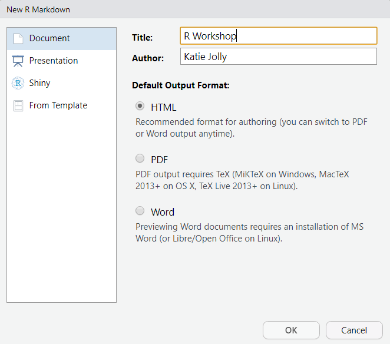

Section 4 Writing R code
There are three main places to write R code while using RStudio. In order of complexity, they are: the console, R scripts, and R markdown.
4.1 The console
The console should be thought of as scratch paper. It’s a way to test code before writing it in a document. It’s also nice for code that you only need to run once, like installing a package.
4.1.1 Try it out
Type
3+2and hit enterType
x <- 3+2and hit enterThen, type
xand hit enter
What did you get back when you typed x into the console?
- Type
x * 4and hit enter
What happened now?
4.1.2 R objects
R stores information in objects, or variables.
We created an object called x by naming it and assigning it with the <- function to the value 3+2. You may also see people write x = 3+2 but that is less common.
Object names should be short and meaningful. They cannot start with a number and the only special characters allowed are . and _. Names are also case sensitive, as is all R code. Certain words have special meanings and cannot be used as object names. These include words like if and else because they have other meanings in R.
if <- 3+2## Error: <text>:1:4: unexpected assignment
## 1: if <-
## ^It won’t let us create the variable because it’s an off-limits name.
As a matter of style, it is recommended to:
Use nouns
Avoid using
.in namesAvoid using function names, even when technically allowed (this will become easier with time as you learn more function names)
Pick a style and go with it
For example, I prefer using _ in my object names instead of camelCase. If you want to learn more about style, consider reading the guides written by Google or the Tidyverse packages later.
4.2 R scripts
R scripts allow you to save the code that you write to run again later. They are essentially a document meant to read code. Let’s make one.
Go to File > New File > R Script or ctrl + shift + N.
Save your new R script in a new folder called R within your project folder.
On the first line, create an object that is assigned to your name. In R, characters (words) need to be surrounded by quotes. Numbers do not.
First, try without quotes. To run this either press the run button at the top of the script or press ctrl + enter when your cursor is on the line you want to run.
name <- Katie## Error in eval(expr, envir, enclos): object 'Katie' not foundIt’s looking for an object called Katie. Why?
In R, variable names do not need quotes. This is how they are distinguished visually from character data.
Let’s try again.
name <- "Katie"One common data structure in R is a vector. It is a list of numbers, characters, or nearly any other data type. It can also be thought of a similar to a list (although its structure is slightly different). Vectors are created with the c() function.
vec <- c(1, 4, 9, 16) # a vector of squaresVectors in R are great for a number of reasons. They’re useful ways to store data and perform a function on each element. For example I can have R add a constant to each element of my vector.
vec + 1## [1] 2 5 10 17I can also have it take the square root.
sqrt(vec)## [1] 1 2 3 4We will see more vectors when we get to wrangling.
4.3 R markdown
The third, and most universally useful in my opinion, way to write code is in an R markdown document. If you’ve used Jupyter notebooks in Python, it’s a similar idea. R markdown is a way to interweave code, analysis, output, and prose. The pandoc engine “knits” your document into a Word doc, PDF, or HTML. This book is an HTML file knitted from a bunch of R markdowns!
Today we will be working in R markdown to save our work and be able to reference it later.
To create an R markdown, go to File > New File > R Markdown…
Write a title for your document (this is not the same thing as naming the file), add your name, and select HTML as the output format.

Erase everything in your document except the header. This is the part enclosed by ---. But let me know if you accidentally delete that too! It’s not hard to fix. Anything typed just directly onto the document is plain text. We will write code in “chunks” later. There are also nice ways to include HTML elements like headers and bold text.
At the top of your document, write a short paragraph about the best thing that happened to you last week. Start it with the header
# Best part of last week. The#in plain text indicates a header.In your paragraph, use bold text at least once and bullet points at least twice. Use the R markdown cheat sheet to figure out how to do that.
Next, add this photo to your R markdown (Google this, hint: you will use parentheses and square brackets): https://www.metrotransit.org/Data/Sites/1/media/metro/greenline/metro_greenline_map_031716_web.png

Finally, insert an R chunk from the top of the document by clicking Insert > R or ctrl + alt + i. Type
3 + 4and then run the code with the green arrow.Now, knit your HTML (Knit) to see what it looks like!
4.2.1 Comments
Whenever you’re writing code, think of it as writing for someone who isn’t you. What this means is that you should leave comments that explain your thought process. People have differing opinions on what a good comment is, but it generally shouldn’t be something that just repeats the code. It should be something about why you chose that function, what you expect to get in your output, issues you had, etc etc.
In R you can write a comment by having a
#at the beginning of the line.In your script, write a comment to yourself about one thing you hope to be able to do in R after the workshop today.